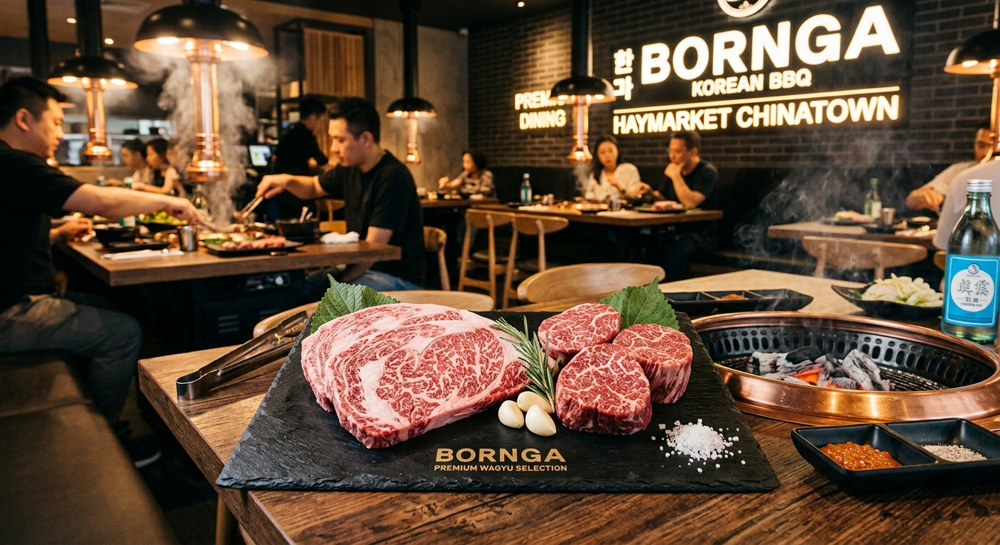
빠른 정리
한국식, 중식, 아시아, 스테이크, 해산물 순으로 배치. 카드, 태그, 지도 링크는 그대로 유지.
필터와 카테고리
먼저 필터로 범위 좁히고, 카테고리 제목으로 흐름 따라가기.
5개 묶음
Google 평점·Naver 평점: 여행 전 카드의 지도/공식 링크에서 최신 평점, 휴무, 예약 가능 여부 확인. 2026-06-14 조사 기준 Quay는 공식 홈페이지에서 영업 종료 확인되어 제외.
한식·BBQ
한국인 선호가 높은 고기·찌개·해산물 한식 카드.
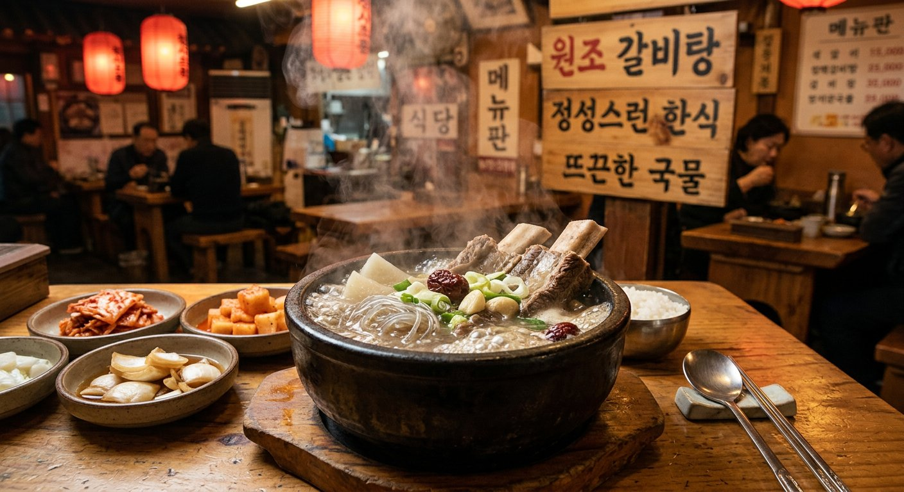
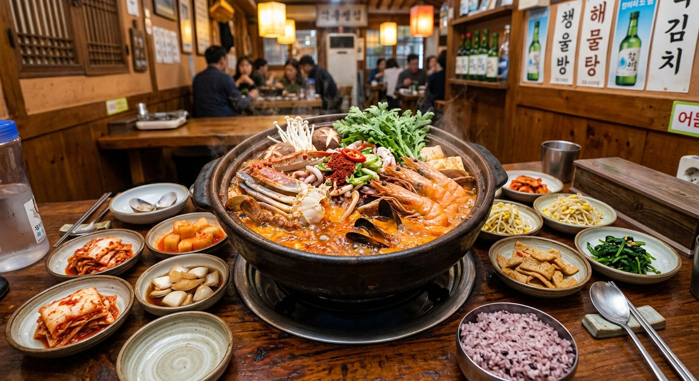
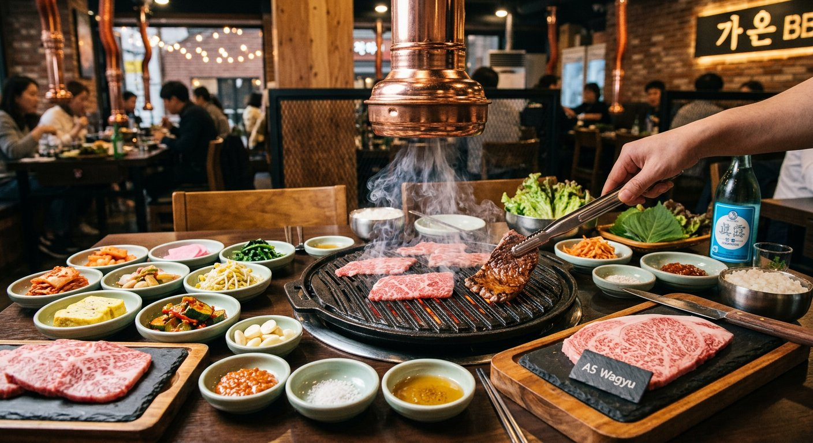
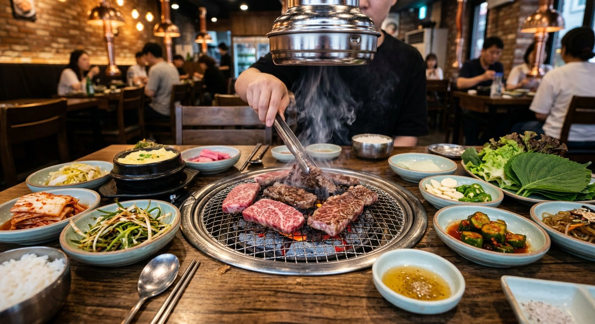
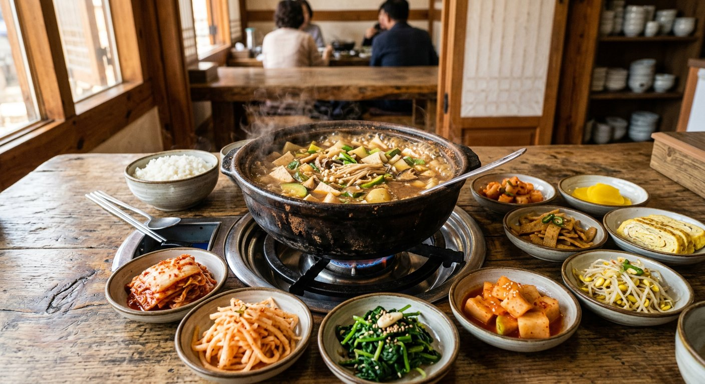
중식·얌차
얌차, 딤섬, 해산물 중식, 예약형 카드.
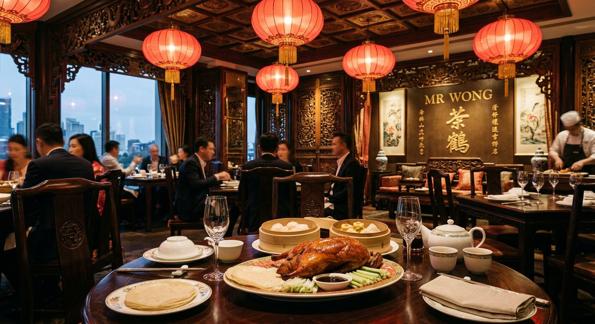
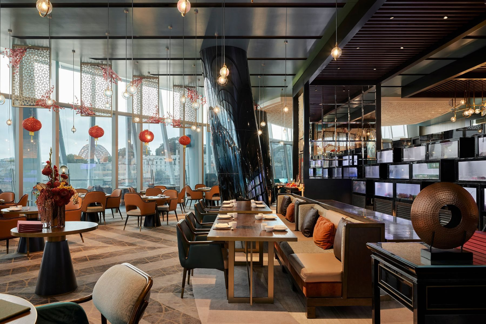
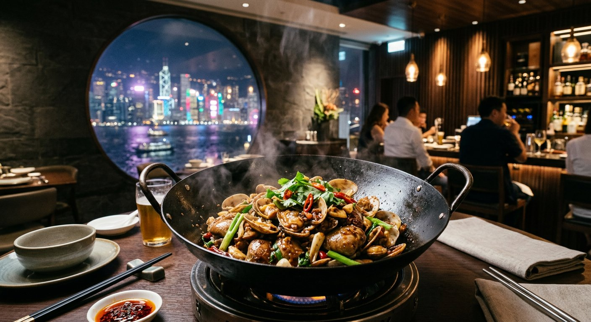
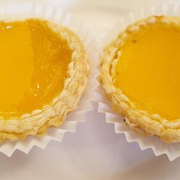
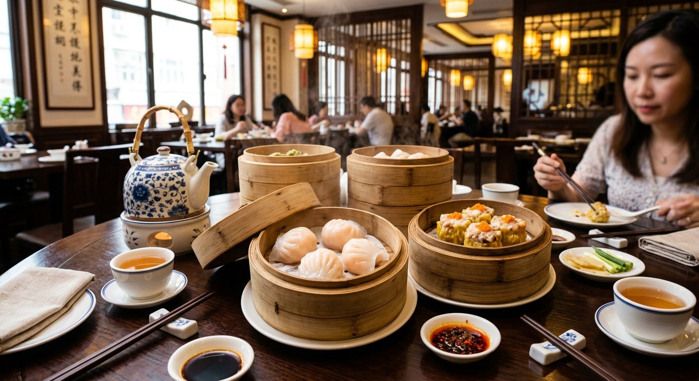
동남아·아시아
말레이시아, 태국, 라멘처럼 가볍게 넣기 좋은 카드.
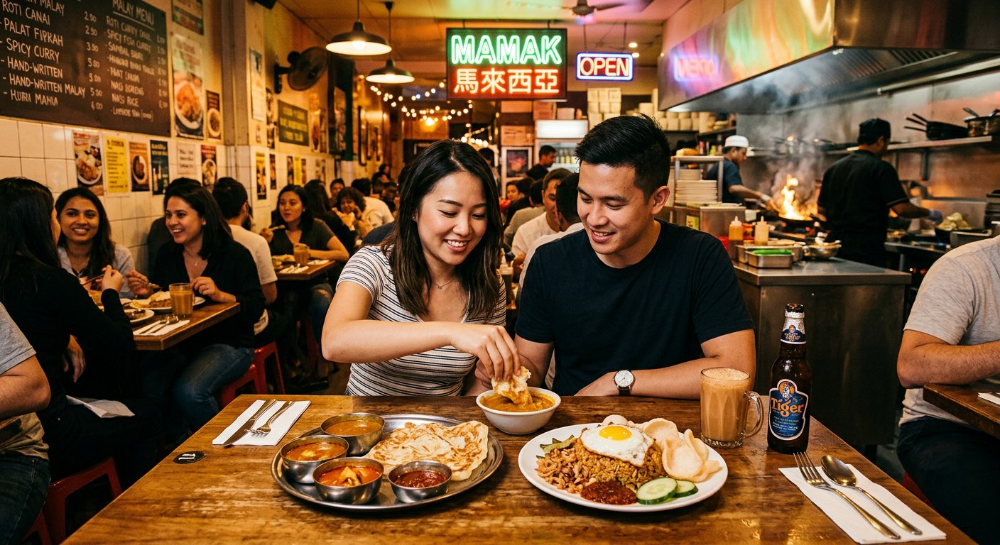
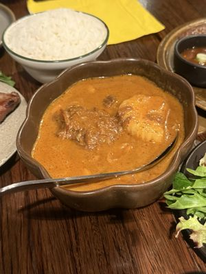
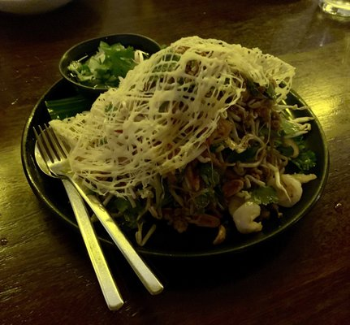
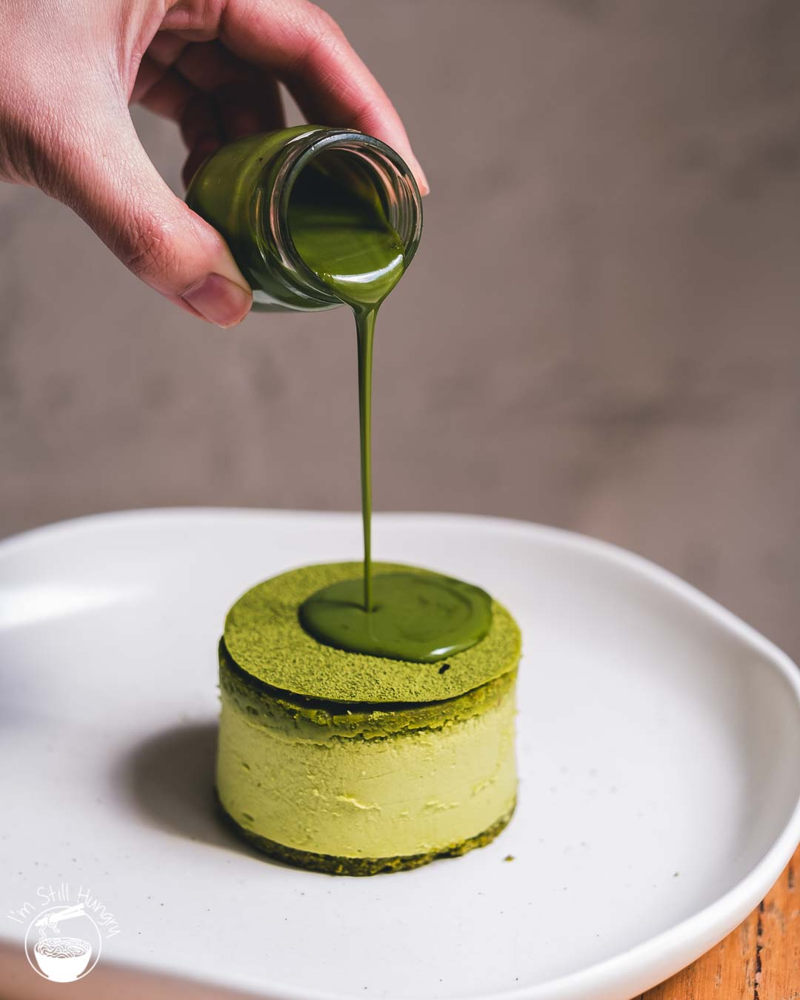


스테이크·양식
고기 중심 저녁, 분위기형 양식, 예약 권장 카드.
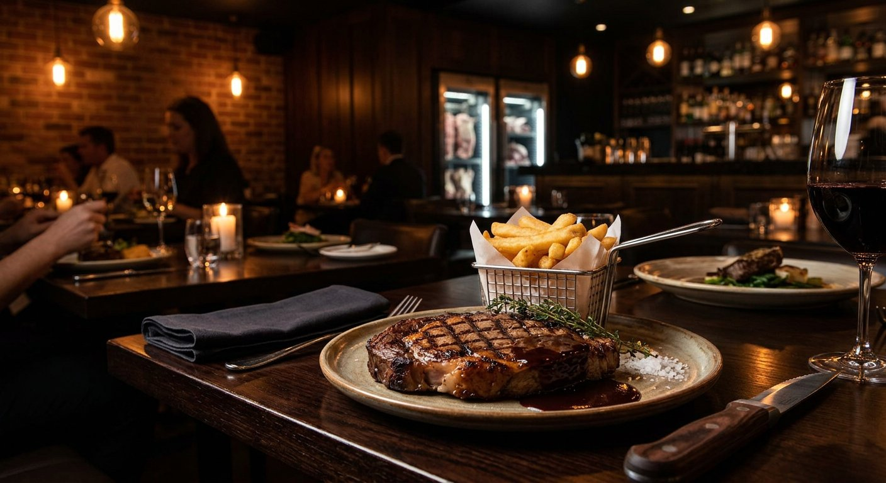
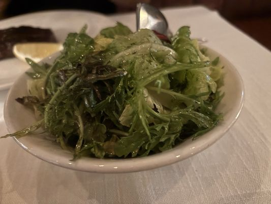
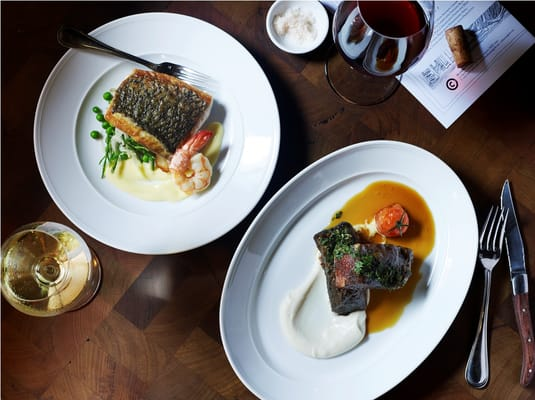
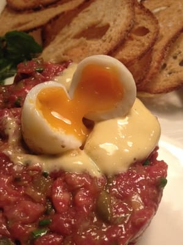
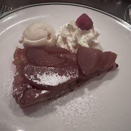
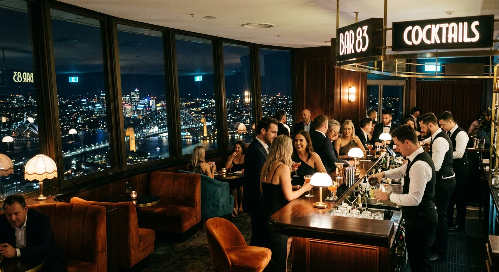
해산물·전망
시장형, 전망형, 오페라하우스 근처 저녁 카드.
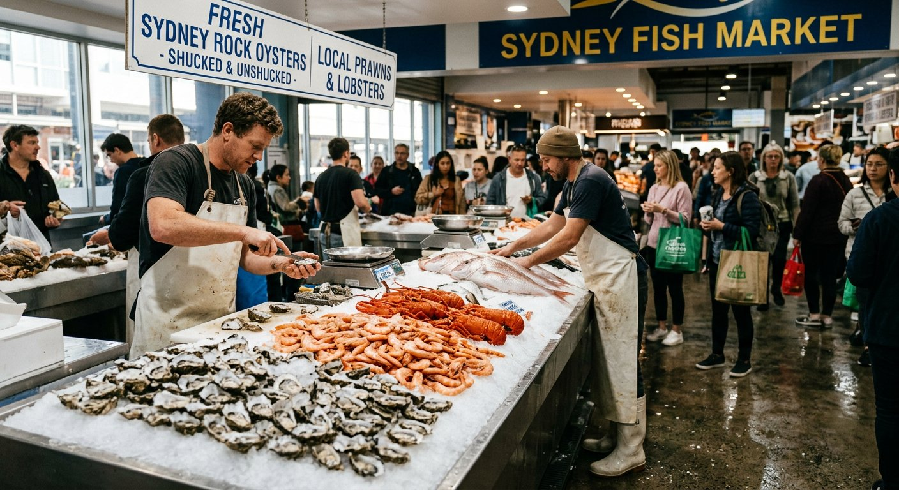
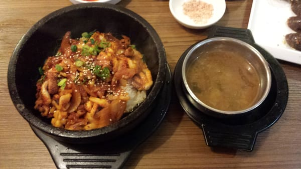